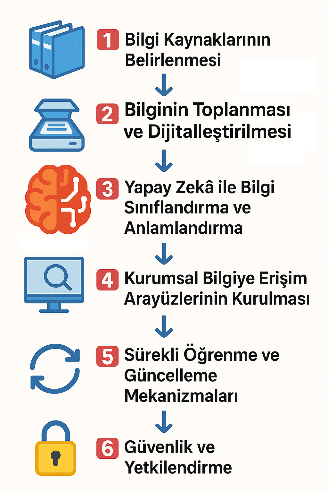

Sesli Dinle
Bilgi Yönetimi ve Yapay Zeka
Bilgi yönetimi, bir organizasyonun bilgi varlıklarını toplama, düzenleme, paylaşma ve kullanma süreçlerini ifade eder. Yapay zekâ açısından bakıldığında ise bu kavram, sistemin öğrenebileceği, genelleyebileceği ve mantıksal çıkarımlar yapabileceği bilgi kaynaklarının etkili şekilde sunulması anlamına gelir. Bir yapay zekâ modelinin eğitilmesinde kullanılan veriler ne kadar kaliteli, güncel ve bağlamsal olarak doğruysa, modelin çıktıları da o denli güvenilir olur.
YZ destekli sistemlerde bilgi yönetimi üç ana açıdan önem taşır. Birincisi, doğru bilgiye erişim; çünkü YZ sistemleri, geçmiş veriler ve uzman bilgileri olmadan anlamlı öğrenme gerçekleştiremez. İkincisi, bilginin sürekliliği ve güncelliği; dinamik sektörlerde değişen bilgiler ışığında sistemin yeniden öğrenmesi ya da adapte olması gerekebilir. Üçüncüsü ise, kurumsal hafızanın korunması; bilgi yönetimi sayesinde YZ sistemleri, bireysel çalışanlara bağımlı kalmadan kurumsal bilgiyi sürdürebilir hale gelir.
Kurumsal Hafıza ve Yapay Zeka
Kurumsal hafıza, bir organizasyonun yıllar boyunca edindiği bilgi, deneyim, süreç ve uygulamaların bütünüdür. Bu hafıza; çalışanların tecrübeleri, belgeler, veri tabanları, politikalar ve yazılı olmayan bilgiler aracılığıyla oluşur. Kurumların sürdürülebilirliği, öğrenen organizmalar haline gelebilmesi ve geçmiş hatalardan ders çıkarabilmesi için kurumsal hafızanın korunması kritik öneme sahiptir. Bu bağlamda, yapay zekâ teknolojileri kurumsal hafızanın korunması ve etkili biçimde kullanılmasında güçlü bir araç haline gelmiştir.
Günümüzde birçok kurum, çalışan değişimleri, organizasyonel dönüşümler ve bilgi dağınıklığı nedeniyle bilgi kaybı riskiyle karşı karşıyadır. Emeklilik, istifa ya da departmanlar arası geçiş gibi nedenlerle çalışanlarla birlikte bilgi de kaybolabilmekte veya kurum dışına çıkabilmektedir. Yapay zekâ sistemleri, bu dağınık ya da dağılma riski taşıyan bilgiyi düzenli biçimde toplayarak, sınıflandırarak ve erişilebilir hale getirerek kurumsal hafızanın dijital olarak korunmasına katkı sağlar.
Özellikle doğal dil işleme (NLP) tabanlı sistemler, çalışanların e-postaları, toplantı notları, belgeler ya da geribildirimler gibi yapılandırılmamış veri kaynaklarındaki bilgileri analiz ederek kuruma özgü bilgi kümeleri oluşturabilir. Bu sayede geçmişte alınmış kararlar, uygulanmış stratejiler ya da müşteriyle yaşanmış deneyimler sistematik hale getirilir. Chatbot’lar ve bilgi yönetim asistanları da bu bilgiler aracılığıyla yeni çalışanlara rehberlik edebilir, kurum içi eğitim süreçlerini destekleyebilir.
Kurumsal hafızanın dijitalleştirilmesi yalnızca bilgiye erişimi kolaylaştırmakla kalmaz, aynı zamanda kurumsal kültürün sürekliliğini de sağlar. Yapay zekâ sayesinde bilgi yalnızca saklanmaz, aynı zamanda yeniden kullanılabilir hale gelir. Örneğin, geçmişte benzer bir projede karşılaşılan sorunların nasıl çözüldüğüne dair bilgiler, yeni projelerde tekrar eden hataları önleyebilir. Bu da zaman, maliyet ve kalite açısından önemli kazanımlar sağlar.
Elbette yapay zekânın kurumsal hafızaya katkısı yalnızca teknik bir mesele değildir; bu süreçte etik, şeffaflık ve veri güvenliği gibi konular da göz önünde bulundurulmalıdır. Bilginin doğru, güncel ve bağlamına uygun şekilde kullanılabilmesi için iyi bir bilgi yönetimi stratejisiyle desteklenmesi gerekir.
Sonuç olarak, yapay zekâ kurumsal hafızanın sadece korunmasına değil, aynı zamanda aktif olarak kullanılmasına da olanak tanır. Bilginin sürdürülebilir biçimde aktarılmasını sağlamak, kurumların rekabet gücünü artırır, adaptasyon yeteneğini geliştirir ve öğrenen organizmalar haline gelmelerini kolaylaştırır. Bu nedenle, yapay zekâ yatırımları yalnızca verimlilik için değil, kurumsal hafızayı geleceğe taşıyabilmek için de stratejik bir öneme sahiptir.
Yapay Zekâ ile Kurumsal Hafıza Yönetimi: Uygulamaya Dönük Yaklaşım
Aşağıda, kurumsal hafızanın yapay zekâ ile nasıl etkili bir şekilde yönetilebileceğini, genel hatlarıyla adım adım ortaya koyan, uygulamaya dönük bir yaklaşım yer almaktadır.

1️⃣ Bilgi Kaynaklarının Belirlenmesi
Amaç: Kurum içindeki mevcut bilgi kaynaklarının haritalanması.
• E-posta, toplantı notları, sunumlar, PDF belgeler, kurum içi wiki’ler, alan uzmanı bilgileri, veritabanları gibi yapılandırılmış ve yapılandırılmamış tüm bilgi kaynakları belirlenir.
• Bu kaynakların hangi departmanlar tarafından kullanıldığı ve hangi sıklıkla güncellendiği tespit edilir.
2️⃣ Bilginin Toplanması ve Dijitalleştirilmesi
Amaç: Dağınık bilgilerin merkezi ve işlenebilir hale getirilmesi.
• OCR (optik karakter tanıma) teknolojileri ile fiziki veya PDF halindeki belgeler dijitalleştirilir.
• API ve entegrasyonlar kullanılarak e-posta sistemleri, dosya paylaşım platformları, ERP sistemleri gibi kaynaklardan veri çekilir.
• Veri gölü ya da bilgi deposu oluşturularak bilgiler tek yerde toplanır.
3️⃣ Yapay Zekâ ile Bilgi Sınıflandırma ve Anlamlandırma
Amaç:Toplanan bilginin otomatik olarak sınıflandırılması ve erişilebilir hale getirilmesi.
• NLP (doğal dil işleme) algoritmaları kullanılarak belgelerdeki anahtar kavramlar, konu başlıkları ve ilişkilendirmeler çıkarılır.
• Bilgi türüne göre etiketleme yapılır. Örneğin; “müşteri şikayeti,” “proje öğrenimi,” “teknik çözüm,” “önemli karar.”
• Benzer içeriklerin gruplanması ve bağlamsal öneriler sunulması sağlanır. (örneğin; geçmişte benzer bir müşteri sorununu hangi ekip nasıl çözmüş?).
4️⃣ Kurumsal Bilgiye Erişim Arayüzlerinin Kurulması
Amaç: Bilgiyi arayan kişilerin hızlı, doğru ve ihtiyaçlarına uygun şekilde erişebilmesi.
• Akıllı arama motorları ve doğal dilde sorgulama destekli sistemler geliştirilir.
• Kullanıcılar, chatbot veya sanal asistanlar aracılığıyla geçmiş kararları ya da örnek olayları sorgulayabilir.
• Yeni çalışanlar için rehberlik sunan sistemler devreye alınır. (örneğin; yeni çalışan asistanı).
5️⃣ Sürekli Öğrenme ve Güncelleme Mekanizmaları
Amaç: Kurumsal hafızanın güncel ve dinamik kalmasını sağlamak.
• Çalışanlardan gelen yeni belge, e-posta veya içeriklerin belirli kurallarla sisteme eklenmesi sağlanır.
• Geri bildirim mekanizmaları kurularak yapay zekânın önerileri iyileştirilir.
• Eski veya geçersiz bilgilerin sistemden çıkarılması için otomatik arşivleme ve versiyonlama uygulanır.
6️⃣ Güvenlik ve Yetkilendirme
Amaç: Kurumsal bilgilerin gizliliğini ve bütünlüğünü korumak.
• Rol bazlı erişim kontrolü uygulanır. (herkes her bilgiye ulaşamaz).
• Hassas içerikler için anonimleştirme, şifreleme ve iz kayıtları tutulur.
• Yasal ve etik ilkelerle uyum gözetilir. (örneğin; kişisel verilerin korunması).
Örnek Uygulama: Kurumsal Hafızalı Proje Yönetimi Sistemi Tasarımı
Kurumsal hafızayı yapay zekâ destekli bir yapı ile entegre eden bir proje yönetimi sistemi tasarlamak, organizasyonların bilgi birikimini sürdürülebilir kılmak ve projelerde tekrar eden hataları önlemek açısından kritik bir adımdır. Bu sistemin tasarımı, stratejik planlama ve yapılandırılmış bir yol haritası gerektirir.
Aşağıda, yapay zekâ destekli kurumsal hafızanın entegre edildiği bir proje yönetimi sisteminin nasıl tasarlanacağına dair uygulanabilir bir yol haritası yer almaktadır:
🎯 İhtiyaç ve Hedef Belirleme
Nereden başlanmalı?
Proje yönetiminde hangi sorunları çözmek istediğinizi netleştirin.
Nasıl yapılmalı?
• Mevcut proje yönetim süreçlerini analiz edin.
• Sık karşılaşılan hatalar, bilgi kayıpları, tekrar eden sorunları listeleyin.
• Kurumsal hafızadan hangi bilgilerin eksik ya da erişilemez olduğunu tespit edin.
• Nihai hedefi belirleyin. Örneğin; “benzer hataları önlemek”, “bilgi paylaşımını artırmak”, “yeni çalışanların adaptasyon süresini kısaltmak”.
🗺️ Bilgi Kaynaklarının Haritalanması
Nereden başlanmalı?
Kurumda proje bilgilerini barındıran kaynakların nerede olduğunu belirleyin.
Nasıl yapılmalı?
• Proje dosyaları, e-postalar, ERP sistemleri, toplantı notları, dosya sunucuları gibi tüm bilgi kaynaklarını haritalayın.
• Hangi tür bilginin hangi formatta tutulduğunu ve kimlerin kullandığını belgeleyin.
• Bu kaynaklara nasıl erişileceğini ve entegrasyon ihtiyacını analiz edin.
🧠 Kurumsal Hafıza Modelinin Tasarımı
Nereden başlanmalı?
Bilginin nasıl sınıflandırılacağına ve yapının nasıl organize edileceğine karar verin.
Nasıl yapılmalı?
• “Proje türü”, “departman”, “öğrenilmiş dersler”, “risk kategorileri” gibi etiket sistemleri oluşturun.
• Ontoloji ya da bilgi haritası tasarlayın. (Örnek: “Tüm Projeler → Savunma Projeleri → Radar Simülasyon Projeleri→ Yüksek Frekanslı Radar İz Takip Simülatörü”).
• Gelecekteki aramalara uygun bilgi mimarisi kurun.
🛠️ Teknoloji Seçimi ve Mimarinin Belirlenmesi
Nereden başlanmalı?
Sistemin üzerine kurulacağı teknolojik çerçeveyi belirleyin.
Nasıl yapılmalı?
• Kullanılacak yapay zekâ bileşenlerini belirleyin:
• NLP modeli (metin analizi için)
• Bilgi tabanı yönetimi
• Arama motoru
• Chatbot / Soru-cevap sistemi
• Bulut mu yerel mi kullanılacağına karar verin.
• Güvenlik, yetkilendirme ve veri erişim ihtiyaçlarını da dahil edin.
🧪 Prototip Geliştirme ve Test
Nereden başlanmalı?
Küçük, sınırlı bir proje grubunu pilot proje olarak seçin.
Nasıl yapılmalı?
• Geçmişte yapılmış birkaç projeyi sisteme yükleyin.
• Bilgi sınıflandırması ve arama işlevlerini test edin.
• Kullanıcılardan geri bildirim alın. Neyi bulmakta zorlandılar? sistem önerileri işe yarıyor mu?
👥 Eğitim ve Kullanıcı Katılımı
Nereden başlanmalı?
Sistemi kullanacak kişilerin alışkanlıklarını değiştirmeye hazır olup olmadığını anlayın.
Nasıl yapılmalı?
• Proje yöneticilerine sistemin ne sağladığını anlatan kısa eğitimler verin.
• Yeni projelerde sistemi nasıl kullanacaklarına dair pratik senaryolar gösterin.
• Kullanıcı katkısını teşvik edin: “bu projede öğrendiklerinizi girin, sizden sonrakiler faydalansın” yaklaşımı.
🔄 Devamlılık ve Gelişim Planı
Nereden başlanmalı?
Sistemin canlıya geçmesinden sonra nasıl güncel tutulacağını planlayın.
Nasıl yapılmalı?
• Yeni projelerin sistemle entegre edilmesini otomatik hale getirin.
• Bilgi güncelleme ve arşivleme politikaları belirleyin.
• Sistem geri bildirimlerine göre NLP modelini zamanla iyileştirin.
Bu yapı, kurumların proje bazlı çalışmalarda geçmiş deneyimlerden öğrenmesini, bilgi kaybını önlemesini ve karar alma süreçlerinde daha isabetli adımlar atmasını sağlar.
Sonuç: Kurumsal Hafızayı Geleceğe Taşımada Yapay Zekânın Stratejik Rolü
Kurumsal bilgi, bir kurumun en değerli varlıklarından biridir; ancak bu bilginin sürdürülebilirliği, sistematik bir şekilde toplanması, anlamlandırılması ve paylaşılmasıyla mümkündür. Yapay zekâ teknolojileri, yalnızca bu süreci otomatikleştirmekle kalmaz; aynı zamanda bilginin bağlam içinde yeniden kullanılmasını, geçmiş deneyimlerin yeni projelere ışık tutmasını ve bireysel hafızaların kurumsallaştırılmasını sağlar.
Bu yazıda adım adım aktarılan yaklaşım, kurumların kendi bilgi ekosistemlerini analiz etmesini, bu bilgilerden stratejik değer üretmesini ve bunları merkezi bir sistem altında erişilebilir hale getirmesini mümkün kılmaktadır. Doğal dil işleme, semantik arama, chatbot tabanlı erişim ve bilgi sınıflandırma gibi teknolojiler, bu dönüşümün temel yapı taşlarını oluşturmaktadır.
Yapay zekâ destekli kurumsal hafıza yönetimi, sadece bugünün değil, geleceğin de rekabet avantajını belirleyen unsurlardan biri olacaktır. Bu nedenle, bu sistemlerin yalnızca teknolojik değil; kültürel, organizasyonel ve etik açıdan da kurumsal stratejiye entegre edilmesi büyük önem taşımaktadır. Doğru bir başlangıç, sürdürülebilir bir güncelleme politikası ve kullanıcı odaklı uygulama yaklaşımları ile yapay zekâ, kurumların deneyimlerini bilgiye, bilgiyi de değere dönüştürmesinde vazgeçilmez bir ortak olacaktır.